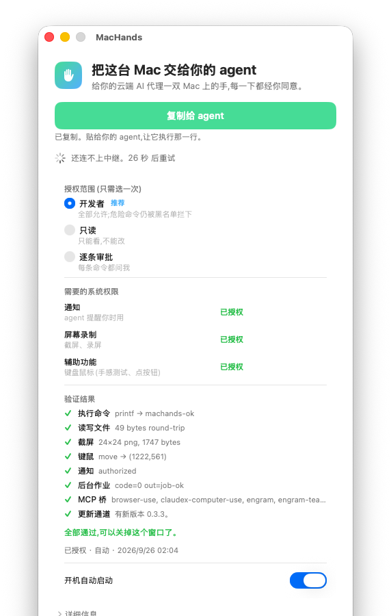

给你的云端 AI 代理
一双 Mac 上的手
Claude Code、Codex、Cursor 跑在云端时碰不到 Xcode、模拟器、Safari、公证。MacHands 是免费的 MIT 开源代理桥：让它们用你自己的 Mac 干活——不用租机器，不用开远程登录，不用懂 SSH。每一手都经你同意。
Give a cloud AI agent
hands on your own Mac
Claude Code, Codex, and Cursor cannot reach Xcode, simulators, Safari, or notarization from the cloud. MacHands is a free MIT agent bridge: they use your Mac — no rented machine, no Remote Login, no SSH. Every action needs your consent.
三步开始
配对之后选一次授权范围，之后不再打扰。
Three steps
Pick an access scope once after pairing. It will not keep asking.
打开 MacHands.app
菜单栏出现一只手。请从源码构建。GitHub 上的 v0.3.1 是源码发布，没有附带已签名的 Mac 安装包。
Open MacHands.app
A hand appears in the menu bar. Build from source. GitHub v0.3.1 is a source release with no signed Mac app attached.
点「复制给 agent」
得到一段配对文字。配对码 10 分钟有效，只能用一次。
Click “Copy for agent”
You get a pairing block. The code lasts 10 minutes and can be used only once.
贴给你的云端代理
它会自己执行里面那一行。几秒后菜单栏显示「已连接」。然后选一次范围：开发者、只读、或逐条审批。
Paste it into your cloud agent
The agent runs that one line. The menu bar shows Connected. Then pick a scope once: developer, read-only, or ask every time.
截图与演示
授权窗口的真实截图，以及同一窗口约 9 秒的录屏。
Screenshot and demo
A real capture of the authorization window, plus a ~9s recording of that same window.

你能看见、你能停
危险命令有黑名单。随时可以暂停。授权可以撤销。中继请自建。
You can see it. You can stop it.
Dangerous commands are blocked. Pause anytime. Revoke access. Self-host the relay.
-
MIT 开源，完全免费源码在 GitHub。没有付费服务。MIT and freeThe source is on GitHub. There is no paid service.
-
不用开远程登录没有 sshd 暴露。执行命令的是 App 本身。No Remote LoginNo sshd is exposed. The app itself runs the commands.
-
端到端加密agent 与 Mac 之间 X25519 + ChaCha20-Poly1305。中继只见密文。End-to-end encryptionX25519 + ChaCha20-Poly1305 between agent and Mac. The relay sees ciphertext only.
-
审计日志每条命令和你的决定都写进
~/Library/Logs/MacHands/audit.log。Audit logEvery command and your decision is written to~/Library/Logs/MacHands/audit.log. -
中继只自建说明见仓库 relay/README.md。Self-host the relaySee relay/README.md in the repo.
它不是什么
What it is not
-
不是磁盘工具不是 DataDance，也不是 MacDisk。MacHands 不做外置磁盘搬家。Not a disk toolNot DataDance. Not MacDisk. MacHands does not relocate external disks.
-
不是付费服务没有付费档。源码按 MIT 公开。Not a paid serviceThere is no paid tier. The source is published under MIT.
-
不是远程桌面租赁用的是你自己的 Mac。Not a rented MacIt uses the Mac you already have.
-
不是 Apple / Anthropic / OpenAI / xAI 的产品没有隶属关系。Not an Apple, Anthropic, OpenAI, or xAI productNo affiliation.
开源与免费
项目以 MIT 许可公开。没有付费服务。
Open source and free
Published under the MIT License. There is no paid service.
使用、阅读、修改都可以。没有付费档。
- 菜单栏 App（Swift）+ CLI / MCP（npm 包
machands）+ 自建中继 - 源码：github.com/UnstoppableCurry/MacHands
- 许可：MIT License
- 中继：relay/README.md
Use, read, and change it. There is no paid tier.
- Menu-bar app (Swift) + CLI / MCP (npm package
machands) + self-hosted relay - Source: github.com/UnstoppableCurry/MacHands
- License: MIT License
- Relay: relay/README.md
v0.3.1 是源码发布，没有已签名的 App 附件。请按仓库 README 在 Mac 上构建。
v0.3.1 is a source release with no signed app attached. Build on a Mac from the README.
怎么拿到
入口是 GitHub 源码。不要下载未经核对的安装包。
How to get it
The GitHub source is the entry. Do not download an installer we have not verified.
从 GitHub 获取
v0.3.1 只有源码，没有签名安装包。Mac App 请在 Mac 上按 README 构建。CLI / MCP：npx -y machands。中继请自建，见 relay/README.md。
Get it from GitHub
v0.3.1 is source only — no signed installer. Build the Mac app from the README. CLI / MCP: npx -y machands. Self-host the relay; see relay/README.md.
常见问题
和英文页同一套说法。
FAQ
The same claims as the Chinese page.
这是磁盘工具、DataDance 或 MacDisk 吗？
不是。MacHands 是给云端 AI 用的代理桥：菜单栏 App + CLI/MCP。它不做外置磁盘搬家。
要付钱吗？
不用。源码以 MIT 开源，没有付费服务。
怎么安装？
打开 GitHub。v0.3.1 是源码发布，没有已签名的 App。请按 README 构建。
需要打开「远程登录」吗？
不需要。App 自己执行命令。没有 sshd 暴露。
中继怎么跑？
只支持自建。请看仓库里的 relay/README.md。
怎么联系？
邮件 wangtianxin666@icloud.com，或到 GitHub 开 issue。
Is this a disk tool, DataDance, or MacDisk?
No. MacHands is an agent bridge: menu-bar app + CLI/MCP. It does not relocate external disks.
Do I have to pay?
No. The source is MIT-licensed. There is no paid service.
How do I install it?
Open GitHub. v0.3.1 is a source release with no signed app. Build it from the README.
Do I need Remote Login?
No. The app runs commands itself. No sshd is exposed.
How do I run the relay?
Self-host only. See relay/README.md.
How do I get in touch?
Email wangtianxin666@icloud.com or open a GitHub issue.